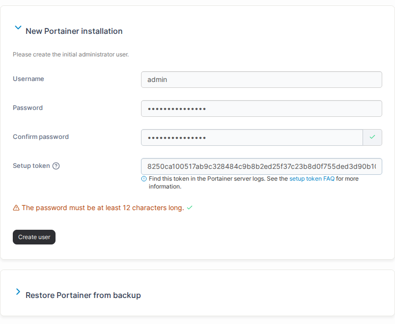
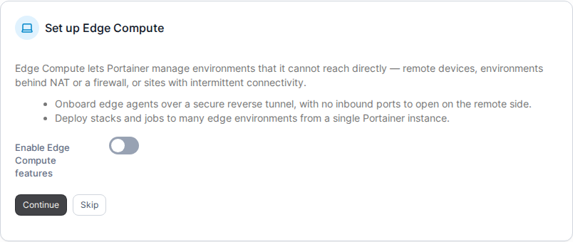
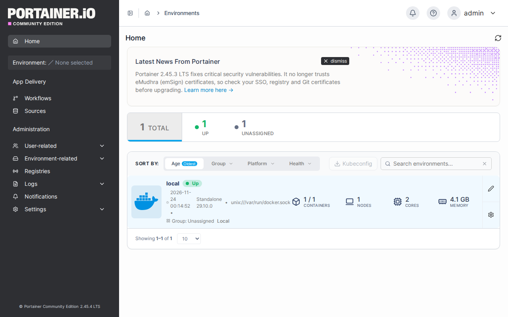
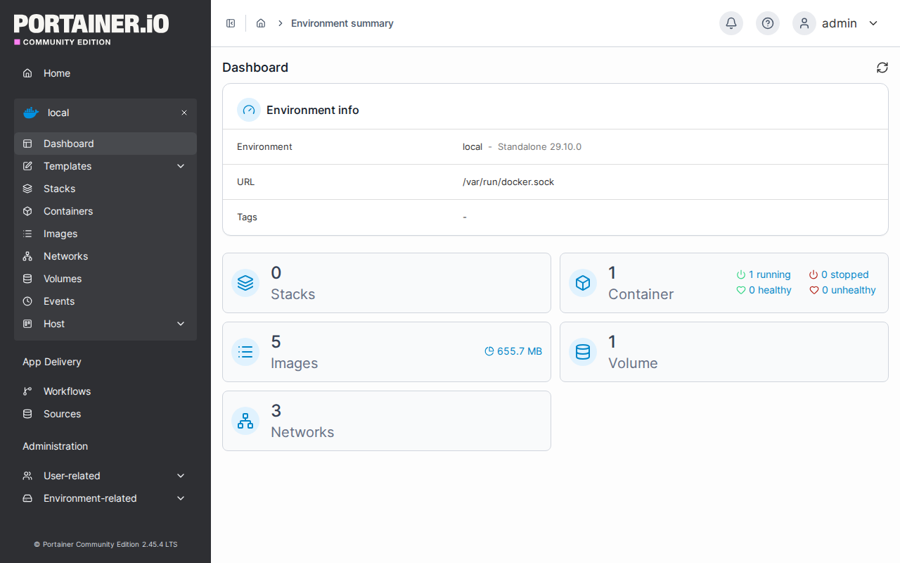
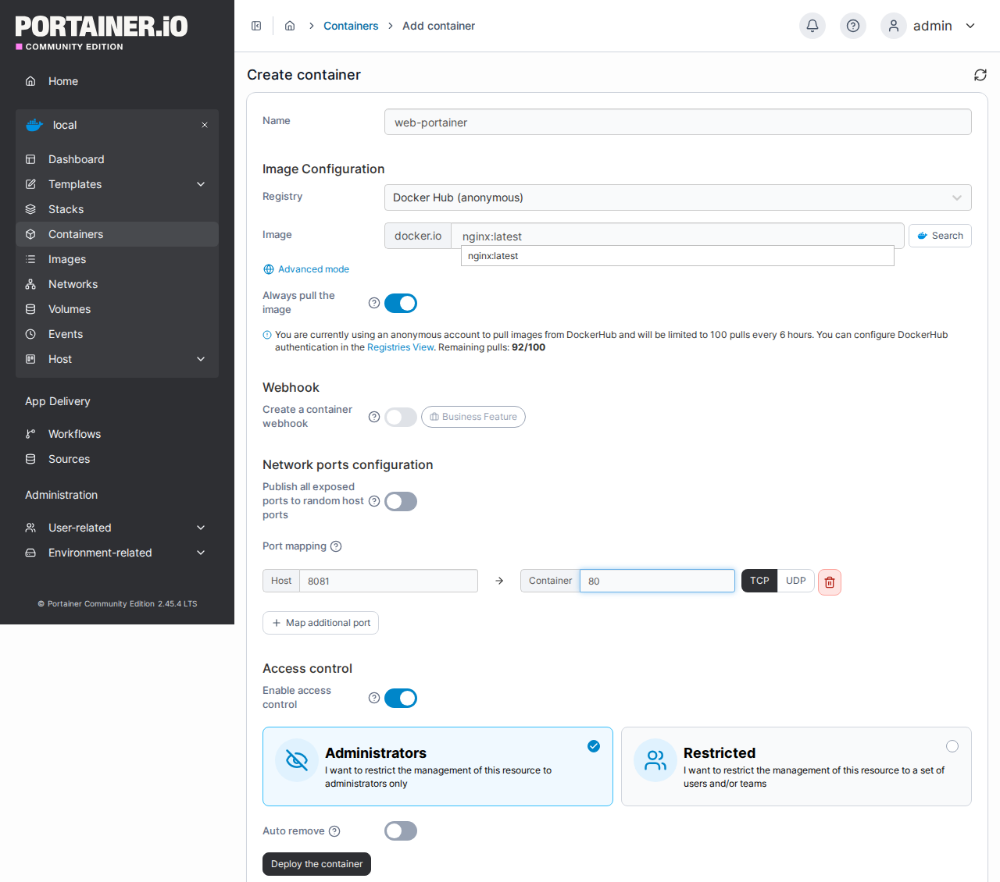
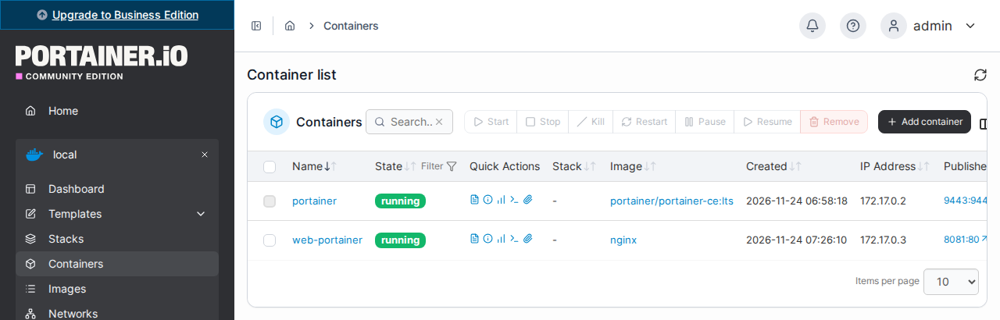
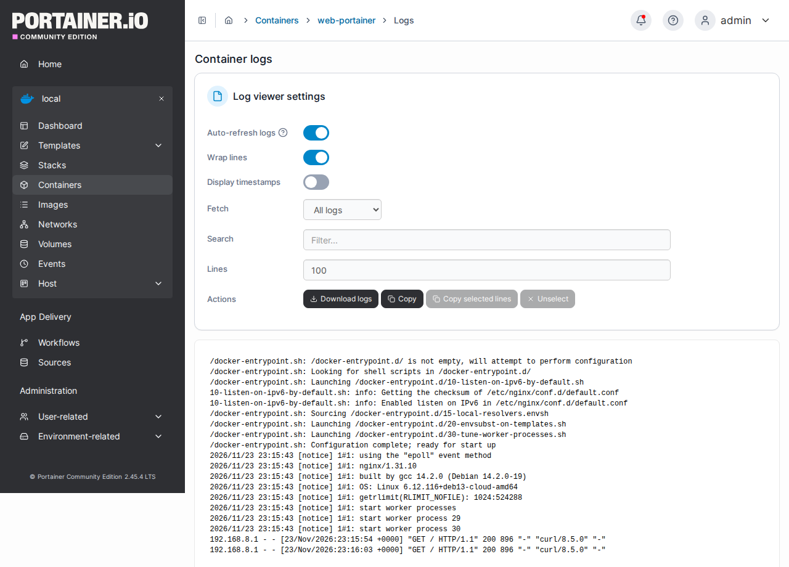
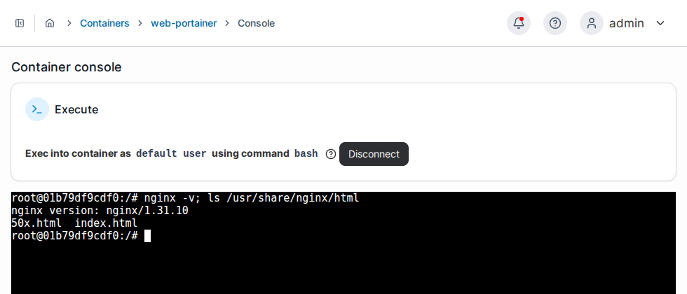
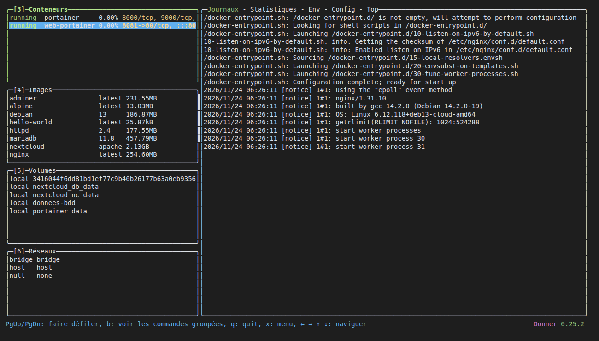
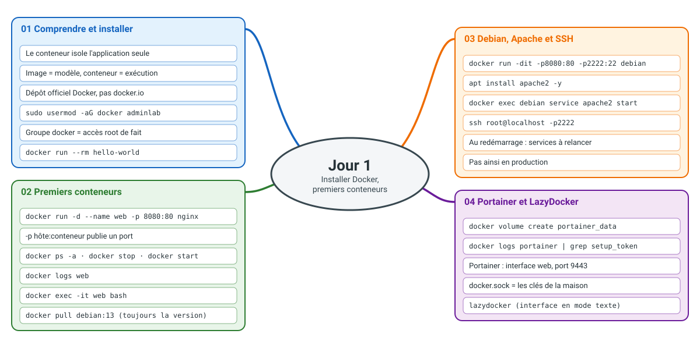

Gérer Docker avec Portainer et LazyDocker¶
Résumé
La ligne de commande est indispensable, mais une interface aide à voir d'un coup d'œil ce qui tourne, à lire des journaux, à dépanner. Ce TP installe Portainer CE, l'interface web d'administration de Docker la plus répandue, dans un conteneur. On y crée un conteneur sans taper de commande, on lit ses journaux et on ouvre une console dedans, depuis le navigateur du PC.
On découvre ensuite LazyDocker, une interface en mode texte qui s'utilise dans une session SSH, puis on situe Docker Desktop, l'application graphique pour les postes de travail. Au passage, on comprend pourquoi donner à une interface l'accès au socket Docker revient à lui donner les clés de la machine.
| Propriété | Valeur |
|---|---|
| Difficulté | Débutant |
| Durée estimée | 1 h 30 |
| Version décrite | Portainer CE 2.45.4 LTS, LazyDocker 0.25.2, Docker Engine 29.10 |
| Place dans le parcours | Partie 4 sur 17 du parcours Docker — jour 1 |
| Dernière mise à jour | 2026-11-24 |
Convention de lecture
🖥️ PC hôte · 🐧 VM docker-hote, connecté en adminlab · 🌐 navigateur du PC · ✍️ exercice. Portainer n'existe qu'en anglais : ses menus sont écrits en gras, en anglais, avec leur traduction entre parenthèses. Point de départ : docker ps -a ne montre aucun conteneur (sinon les supprimer avec docker rm -f), et les ports 8081 et 9443 de la VM sont libres.
1. Ligne de commande, interface web, interface texte¶
| Outil | Type | Où il tourne | Pour quoi faire |
|---|---|---|---|
Commande docker |
Ligne de commande | Sur le serveur | Tout, et surtout l'automatisation (scripts, fichiers de configuration) |
| Portainer CE | Interface web | Dans un conteneur, sur le serveur ; on l'utilise depuis un navigateur | Voir et gérer un ou plusieurs serveurs Docker à plusieurs, sans être expert de la ligne de commande |
| LazyDocker | Interface texte (TUI) | Dans le terminal, sur le serveur | Surveiller et dépanner rapidement dans une session SSH, sans rien ouvrir sur le réseau |
| Docker Desktop | Application graphique | Sur un poste de travail Windows, macOS ou Linux | Développer et tester des conteneurs sur son PC |
Ces interfaces ne remplacent pas la ligne de commande : elles envoient exactement les mêmes ordres au moteur Docker. Un conteneur créé dans Portainer apparaît dans docker ps, et inversement.
2. Installer Portainer CE¶
2.1 Lancer le conteneur Portainer¶
Portainer CE (Community Edition) est la version gratuite et libre de Portainer ; il existe aussi une version payante, Business Edition. Portainer publie deux branches : LTS (Long Term Support, maintenue longtemps, conseillée) et STS (Short Term Support, nouveautés plus rapides). On installe la LTS, comme le recommande la documentation de Portainer.
-
🐧 Créer le volume où Portainer rangera sa base de données (comptes, réglages) :
Un volume est un espace de stockage géré par Docker, qui survit à la suppression du conteneur. On en reparle en détail au jour 2 ; retenir pour l'instant que sans lui, supprimer le conteneur Portainer effacerait tous ses réglages.
-
🐧 Lancer Portainer (une seule commande, sur une seule ligne) :
docker run -d -p 9443:9443 --name portainer --restart=always -v /var/run/docker.sock:/var/run/docker.sock -v portainer_data:/data portainer/portainer-ce:ltsOption Explication -p 9443:9443L'interface web, en HTTPS --name portainerNom du conteneur --restart=alwaysPolitique de redémarrage : Docker relance le conteneur s'il s'arrête tout seul, et au démarrage de la VM -v /var/run/docker.sock:/var/run/docker.sockDonne au conteneur l'accès au socket Docker de la VM : c'est ainsi que Portainer pilote Docker (voir la section 5) -v portainer_data:/dataRange le dossier /datadu conteneur dans le volume créé juste avantportainer/portainer-ce:ltsL'image de Portainer CE, branche LTS -
🐧 Vérifier :
CONTAINER ID IMAGE COMMAND CREATED STATUS PORTS NAMES 2fc8f7b7cb70 portainer/portainer-ce:lts "/portainer" 5 seconds ago Up 4 seconds 8000/tcp, 9000/tcp, 0.0.0.0:9443->9443/tcp, [::]:9443->9443/tcp portainerLa colonne
PORTSaffiche aussi8000/tcpet9000/tcp, sans flèche : le conteneur écoute sur ces ports, mais ils ne sont pas publiés, donc injoignables depuis l'extérieur de la VM. Le port 9000 sert une version HTTP non chiffrée de l'interface, que la documentation de Portainer ne garde que pour des raisons de compatibilité. Le port 8000 sert de tunnel aux agents Edge (des serveurs distants qui se connectent à Portainer) : la documentation le publie avec-p 8000:8000, mais on ne le fait que si l'on utilise ces agents. Moins de ports publiés, c'est moins de portes d'entrée.
Que fait --restart=always ?
En partie 3, les services ne revenaient pas après un redémarrage. Ici, c'est Docker lui-même qui relance le conteneur Portainer quand la VM redémarre, ou si Portainer plante. Les politiques possibles : no (par défaut, rien), on-failure (seulement après une erreur), always (relancé s'il s'arrête tout seul, et à chaque démarrage de Docker, même s'il avait été arrêté exprès avec docker stop) et unless-stopped (pareil, sauf s'il avait été arrêté exprès). Dans tous les cas, un docker stop arrête bien le conteneur sur le moment.
2.2 Récupérer le jeton de configuration¶
Pour qu'un inconnu ne puisse pas créer le compte administrateur à notre place pendant les premières minutes, Portainer demande un jeton de configuration (setup token), qu'il écrit dans ses journaux au démarrage.
🐧 L'afficher :
Le jeton change à chaque installation : copier le sien (sélectionner la suite de chiffres et de lettres après setup_token= dans le terminal, puis clic droit ou Ctrl+Shift+C selon le terminal).
2.3 Créer le compte administrateur¶
- 🌐 Ouvrir
https://IP-de-la-VM:9443(bien https). Le navigateur affiche une alerte de sécurité : Portainer utilise un certificat autosigné, qu'aucune autorité reconnue n'a signé. Dans un lab, c'est attendu : cliquer sur Paramètres avancés, puis Continuer vers le site (Chrome, Edge), ou Avancé, puis Accepter le risque et poursuivre (Firefox). -
🌐 Remplir l'écran New Portainer installation (nouvelle installation) :
Champ Valeur Username (identifiant) adminPassword et Confirm password (mot de passe, confirmation) TutoDocker-Lab1!Setup token (jeton de configuration) Le jeton copié à l'étape précédente 
Création du compte administrateur : 12 caractères minimum et le jeton lu dans les journaux.
-
🌐 Cliquer sur Create user (créer l'utilisateur).
-
🌐 L'écran Set up Edge Compute propose d'activer la gestion de serveurs distants : cliquer sur Skip (passer).

Les fonctions Edge servent à gérer des serveurs distants : inutiles ici.
-
🌐 Sur l'écran d'accueil, cliquer sur Get Started (commencer) : Portainer se connecte au Docker de la machine sur laquelle il tourne, l'environnement local.
« Your Portainer instance has timed out for security purposes »
Pour limiter les risques, Portainer ne laisse qu'un temps limité pour créer le compte administrateur après son démarrage. Si ce message apparaît, redémarrer le conteneur, relire le jeton dans les journaux (tail -1 garde la ligne la plus récente) et recommencer :
3. Faire le tour de Portainer¶
3.1 Les environnements¶
La page Home (accueil) liste les environnements, c'est-à-dire les serveurs Docker gérés par Portainer. Il n'y en a qu'un, local.

L'environnement local : le Docker de la VM, joint par son socket.
On y lit la version de Docker (29.10.0), le mode (Standalone, un serveur seul, par opposition à un cluster Swarm), et les ressources de la VM : 2 cœurs, 4,1 Go. Un même Portainer peut gérer des dizaines de serveurs Docker, en leur installant un petit agent.
🌐 Cliquer sur l'environnement local.
3.2 Le tableau de bord¶

Le tableau de bord résume tout ce que contient le Docker de la VM.
Le menu de gauche reprend les objets de Docker vus en ligne de commande :
| Menu | Contenu | Équivalent en ligne de commande |
|---|---|---|
| Containers (conteneurs) | Liste, création, actions | docker ps -a, docker run, docker stop… |
| Images | Images présentes, téléchargement | docker images, docker pull |
| Networks (réseaux) | Réseaux Docker (jour 2) | docker network ls |
| Volumes | Volumes (jour 2) | docker volume ls |
| Stacks (piles) | Applications décrites en Docker Compose (jour 2) | docker compose |
| Templates (modèles) | Applications prêtes à déployer en un clic | — |
| Events (évènements) | Journal de tout ce qui se passe dans Docker | docker events |
4. Créer et dépanner un conteneur depuis Portainer¶
4.1 Créer un conteneur nginx¶
- 🌐 Containers, puis Add container (ajouter un conteneur).
-
🌐 Remplir :
Champ Valeur Name (nom) web-portainerImage nginx:latest(registre Docker Hub (anonymous) déjà choisi)Network ports configuration > Map additional port (publier un port) Host (hôte) 8081→ Container (conteneur)80, TCP
Chaque champ du formulaire correspond à une option de
docker run. -
🌐 Cliquer sur Deploy the container (déployer le conteneur). Après quelques secondes, il apparaît dans la liste, à l'état running (en marche).

Les deux conteneurs de la VM : Portainer lui-même, et celui qu'on vient de créer.
-
🌐 Ouvrir
http://IP-de-la-VM:8081: la page « Welcome to nginx! » s'affiche. -
🐧 Vérifier que la ligne de commande voit le même conteneur :
« You are currently using an anonymous account… limited to 100 pulls every 6 hours »
Le message du formulaire rappelle une règle de Docker Hub : sans compte, on ne peut télécharger que 100 images toutes les 6 heures par adresse IP publique (200 avec un compte personnel gratuit). Dans une salle de formation où vingt PC sortent sur Internet par la même adresse, la limite peut être atteinte : le message d'erreur contient alors toomanyrequests. Il suffit d'attendre, ou de se connecter à un compte Docker gratuit (docker login), ce que montre la partie 15.
4.2 Lire les journaux et ouvrir une console¶
Dans la colonne Quick Actions (actions rapides), chaque icône ouvre un outil : Logs (journaux), Inspect (inspecter), Stats (statistiques), Console (terminal dans le conteneur) et Attach (s'attacher au processus principal).
-
🌐 Cliquer sur l'icône Logs de
web-portainer: c'est l'équivalent dedocker logs. Les requêtes faites depuis le navigateur du PC y apparaissent, avec l'adresse du PC.
Les journaux du conteneur, avec recherche et téléchargement.
-
🌐 Revenir à la liste, cliquer sur l'icône Console (
>_), laisser la commande/bin/bashet cliquer sur Connect (se connecter). Un terminal s'ouvre dans le conteneur, dans le navigateur : c'est l'équivalent dedocker exec -it web-portainer bash. Taper par exemple :
Une console dans le conteneur, depuis le navigateur du PC.
-
🌐 Cliquer sur Disconnect (se déconnecter) pour fermer la console.
✍️ Exercice — Avec Portainer uniquement : arrêter web-portainer, vérifier que la page ne répond plus, le redémarrer, puis le supprimer. Vérifier ensuite avec docker ps -a dans la VM.
Réponse
Dans Containers, cocher la case de web-portainer, puis utiliser les boutons Stop (arrêter), Start (démarrer) et Remove (supprimer) au-dessus de la liste. Portainer demande une confirmation avant la suppression. Après la suppression, docker ps -a ne montre plus que portainer.
5. Le socket Docker : les clés de la maison¶
Pour piloter Docker, Portainer a besoin du socket /var/run/docker.sock, qu'on lui a donné avec -v /var/run/docker.sock:/var/run/docker.sock. En partie 1, on a vu que l'accès à ce socket permet de devenir root sur la machine.

Portainer monte le socket : qui administre Portainer contrôle la VM.
Conséquence directe : quiconque se connecte à Portainer en administrateur contrôle la VM. Il peut lancer un conteneur qui monte / et lire ou modifier n'importe quel fichier.
Protéger Portainer comme un accès root
- Un mot de passe fort, et pas de compte partagé : Portainer gère des utilisateurs, des équipes et des droits.
- Jamais d'interface Portainer ouverte sur Internet sans protection : la réserver au réseau d'administration, ou la placer derrière un VPN ou un reverse proxy avec authentification (jour 3).
- Garder Portainer à jour : c'est un logiciel exposé, qui a déjà eu des failles de sécurité.
- Même règle pour tout conteneur à qui l'on donne le socket Docker (outils de supervision, de mise à jour automatique…) : se demander s'il en a vraiment besoin, et s'il vient d'une source de confiance.
6. LazyDocker, l'interface en mode texte¶
LazyDocker est un petit programme qui s'utilise dans le terminal, par exemple dans la session SSH ouverte depuis le PC. Il affiche les conteneurs, les images, les volumes et les réseaux, avec les journaux et les statistiques en direct, et se pilote au clavier. Aucun port à ouvrir, aucun mot de passe de plus : il utilise les droits de l'utilisateur qui le lance (ici adminlab, membre du groupe docker).
6.1 L'installer¶
Son auteur fournit un script d'installation. Comme vu en partie 1, on le lit avant de l'exécuter.
-
🐧 Télécharger le script, le lire, puis l'exécuter en
adminlab(pas enroot, ni avecsudo: il s'installe dans le dossier personnel) :curl -fsSLO https://raw.githubusercontent.com/jesseduffield/lazydocker/master/scripts/install_update_linux.sh less install_update_linux.sh bash install_update_linux.shLe programme est copié dans
~/.local/bin/lazydocker. -
🐧 Se déconnecter et se reconnecter : à la connexion, Debian ajoute
~/.local/binà la liste des dossiers où chercher les commandes, s'il existe. Vérifier :Le script installe toujours la dernière version : le numéro peut être plus récent.
6.2 L'utiliser¶
🐧 Relancer d'abord le conteneur de l'exercice, pour avoir quelque chose à regarder (s'il existe encore, le supprimer avant : docker rm -f web-portainer), puis lancer LazyDocker :

LazyDocker, en français, dans une session SSH : tout Docker sur un seul écran.
| Touche | Action |
|---|---|
| Up Down | Choisir un élément dans le panneau actif |
| Left Right | Changer de panneau (Conteneurs, Images, Volumes, Réseaux) |
| [ ] | Changer d'onglet à droite (Journaux, Statistiques, Env, Config, Top) |
| X | Ouvrir le menu des actions possibles sur l'élément choisi (arrêter, redémarrer, supprimer, ouvrir un terminal…) |
| Q | Quitter |
✍️ Exercice — Dans LazyDocker : afficher les statistiques de web-portainer (processeur et mémoire en direct), puis l'arrêter et le supprimer depuis le menu X.
Réponse
Sélectionner web-portainer dans Conteneurs, puis aller sur l'onglet Statistiques avec ] : un graphique du processeur et de la mémoire s'affiche. Appuyer sur X et choisir l'action d'arrêt dans le menu, puis à nouveau X et l'action de suppression, et confirmer. Le menu X rappelle aussi la touche directe de chaque action.
7. Docker Desktop, pour les postes de travail¶
Docker Desktop est une application graphique pour Windows, macOS et Linux, destinée aux postes de travail. Sous Windows, elle fait tourner Docker Engine dans une petite machine virtuelle Linux, gérée par WSL 2 (le sous-système Windows pour Linux), puisque les conteneurs Linux ont besoin d'un noyau Linux. Elle ajoute une interface graphique proche de Portainer, et installe la commande docker dans PowerShell.
| Docker Desktop | Docker Engine sur un serveur Linux | |
|---|---|---|
| Usage | Développer, tester, apprendre sur son PC | Héberger des services pour les utilisateurs |
| Système | Windows 10/11, macOS, Linux avec bureau | Linux (Debian, Ubuntu, Red Hat…) |
| Mémoire conseillée | 8 Go de mémoire vive sur le PC au minimum (pré-requis de Docker pour Windows) | Selon les conteneurs, à partir de 1 Go |
| Licence | Gratuit pour un usage personnel, l'enseignement, les projets libres non commerciaux et les entreprises de moins de 250 salariés et 10 millions de dollars de chiffre d'affaires ; payant au-delà | Gratuit et libre |
Pour un administrateur systèmes et réseaux, Docker Desktop est pratique pour essayer une image sur son PC avant de la déployer sur un serveur. Mais ce n'est pas un outil de production : on ne fait pas tourner les services de l'entreprise sur un poste de travail.
Docker Desktop et les autres hyperviseurs
Docker Desktop pour Windows active la virtualisation de Windows (WSL 2, et Hyper-V dans certains modes). Sur un PC qui fait aussi tourner VMware Workstation ou VirtualBox, les deux cohabitent avec les versions récentes, mais les VM peuvent devenir plus lentes. Pour suivre ce parcours, Docker Desktop n'est pas nécessaire : tout se passe dans la VM docker-hote.
8. Vérifier son lab¶
Vérifier son lab
🐧 En adminlab :
docker ps --format '{{.Names}} {{.Status}}' --filter name=^portainer$
docker inspect portainer --format '{{.HostConfig.RestartPolicy.Name}}'
docker volume ls
lazydocker --version | head -1
Résultat attendu :
🌐 https://IP-de-la-VM:9443 affiche la page de connexion de Portainer, et l'on se connecte avec admin / TutoDocker-Lab1!.
🐧 Pour aller plus loin : redémarrer la VM (sudo reboot), se reconnecter en SSH, et vérifier avec docker ps que Portainer est revenu tout seul, grâce à --restart=always.
Prendre l'instantané 02-fin-jour-1
🐧 Éteindre la VM (sudo poweroff), puis 🖥️ prendre un instantané nommé 02-fin-jour-1. Portainer et son compte admin resservent aux jours suivants.
Le jour 1 en résumé
Avant les questions, relire cette carte : chaque branche reprend une partie du jour, avec ses notions et ses commandes clés.

Le jour 1 en un coup d'œil : les notions et les commandes à retenir.
9. Questions de révision¶
- Un conteneur créé dans Portainer apparaît-il dans
docker ps? Pourquoi ? - Pourquoi Portainer a-t-il besoin de
-v /var/run/docker.sock:/var/run/docker.sock? Quel risque cela fait-il prendre ? - Pourquoi le navigateur affiche-t-il une alerte de sécurité en ouvrant
https://IP-de-la-VM:9443? Est-ce grave dans le lab ? Et en production ? - À quoi sert le volume
portainer_data? Que se passerait-il sans lui si l'on supprimait puis recréait le conteneur ? - Dans quel cas préférer LazyDocker à Portainer, et inversement ?
- Quelle est la différence entre Docker Desktop et Docker Engine ? Lequel installe-t-on sur un serveur ?
Corrigé
- Oui. Portainer n'a pas son propre moteur : il envoie ses ordres au même Docker Engine que la commande
docker, à travers le socket. Les deux voient donc exactement les mêmes conteneurs. - C'est par ce socket que Portainer pilote Docker. Mais l'accès au socket permet de tout faire sur la machine, y compris devenir
root: un administrateur de Portainer contrôle la VM. Il faut donc protéger Portainer comme un accèsroot(mot de passe fort, pas d'exposition sur Internet, mises à jour). - Portainer chiffre la connexion avec un certificat autosigné, qu'aucune autorité reconnue par le navigateur n'a signé : le navigateur ne peut pas vérifier l'identité du serveur. Dans un lab, c'est acceptable. En production, on utilise un certificat signé par une autorité (par exemple Let's Encrypt, au jour 3), sinon les utilisateurs prennent l'habitude d'ignorer les alertes.
- Il conserve la base de données de Portainer (comptes, réglages, environnements). Sans lui, ces données seraient dans la couche du conteneur et disparaîtraient avec lui : il faudrait recréer le compte administrateur et tout reconfigurer.
- LazyDocker : pour un coup d'œil rapide dans une session SSH, sans rien exposer sur le réseau ni installer de service. Portainer : pour gérer plusieurs serveurs, travailler à plusieurs avec des droits différents, ou laisser des collègues moins à l'aise avec la ligne de commande gérer des conteneurs.
- Docker Engine est le moteur seul, pour serveurs Linux, gratuit et libre. Docker Desktop est une application pour postes de travail, qui fait tourner Docker Engine dans une VM cachée et ajoute une interface graphique, avec une licence payante dans les grandes entreprises. Sur un serveur, on installe Docker Engine.
Ressources¶
- Portainer — Installer Portainer CE avec Docker sur Linux — la procédure suivie dans ce TP (en anglais).
- Portainer — Trouver ou personnaliser le jeton de configuration — le setup token (en anglais).
- LazyDocker sur GitHub — installation, raccourcis clavier, configuration.
- Docker — Politiques de redémarrage —
no,on-failure,unless-stopped,always. - Docker — Limites de téléchargement de Docker Hub — les quotas avec et sans compte.
- Docker Desktop pour Windows — prérequis et installation.
- Partie précédente : Un serveur web et SSH dans un conteneur Debian · Partie suivante : Garder ses données : volumes et dossiers montés.